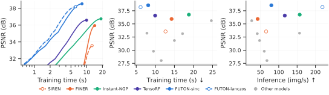
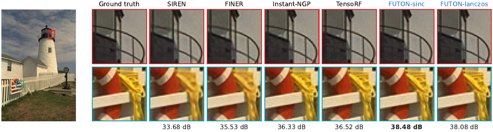
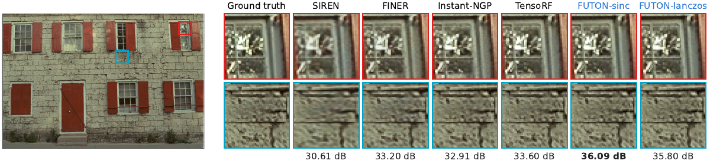
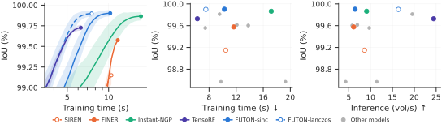
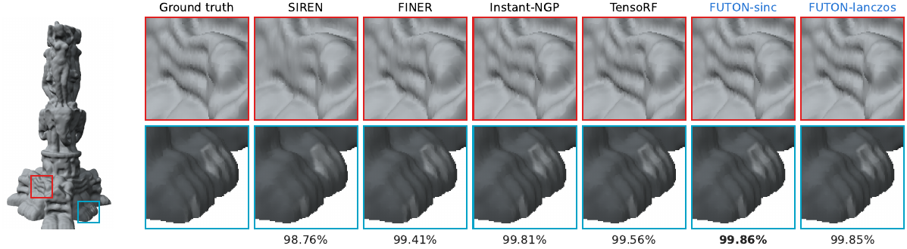
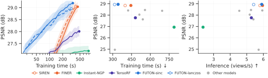
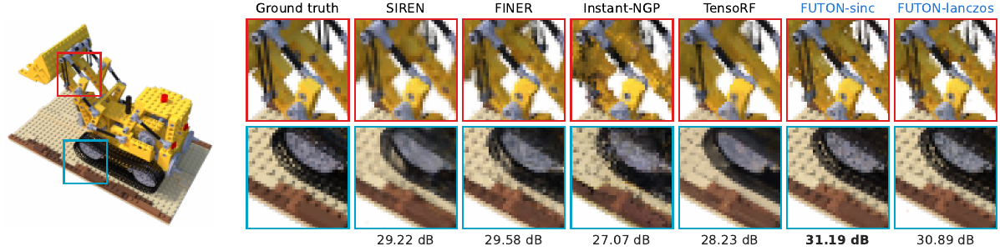
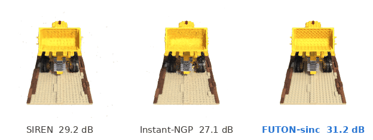

Benchmarks¶
Twelve models on three tasks, at equal parameter count per task. The tables are results/<task>/table.md as scripts/report_paper.py writes them from the runs in logs/; the figures are the paper's. Bold marks the best value in a column and italics the second; ± is one standard error over the signals, after removing each signal's own level (a paired standard error).
Two notes on the rows. TensoRF is the variant its authors recommend for the dimension: CP on images (the only one in 2D) and VM on volumes and radiance fields; both are in the configs. WIRE is the real Gabor variant (nf.RealWIRE) from the WIRE paper and code.
Accuracy comes from the benchmark sweeps. Times are measured separately: for images and volumes every model was retrained alone on an exclusive A100 node after a warm-up pass, and the inference rates in the throughput panels come from the same kind of job (scripts/profile_speed.py). The radiance-field training times still come from the sweep's jobs, which shared their nodes and inflate launch-bound models (Instant-NGP trained about 1.6× slower beside neighbours on the other tasks); an exclusive rerun of the lego and hotdog scenes is queued.
Images¶
24 Kodak images at 768 × 512, about 195k parameters per model, 2000 epochs on 10 % of the pixels per step, scored on every pixel.
| Model | Params (k) | Train time (s) ↓ | PSNR (dB) ↑ | SSIM (%) ↑ | LPIPS ↓ |
|---|---|---|---|---|---|
| RFF | 199.7 | 9.5 | 29.80 ± 0.13 | 82.06 ± 0.84 | 0.3013 ± 0.0070 |
| PE-MLP | 196.7 | 11.5 | 28.03 ± 0.12 | 73.43 ± 1.36 | 0.4191 ± 0.0070 |
| MFN | 198.1 | 24.7 | 35.62 ± 0.16 | 92.16 ± 0.24 | 0.1567 ± 0.0042 |
| SIREN | 198.9 | 12.7 | 33.56 ± 0.15 | 90.69 ± 0.27 | 0.1986 ± 0.0050 |
| Gauss | 198.9 | 15.0 | 31.84 ± 0.22 | 86.48 ± 0.58 | 0.2292 ± 0.0052 |
| WIRE | 199.3 | 17.1 | 33.14 ± 0.41 | 89.20 ± 0.95 | 0.1909 ± 0.0117 |
| FINER | 198.9 | 14.3 | 35.94 ± 0.11 | 93.62 ± 0.26 | 0.1303 ± 0.0032 |
| Instant-NGP | 195.3 | 18.8 | 36.76 ± 0.12 | 93.84 ± 0.18 | 0.1274 ± 0.0030 |
| TensoRF | 202.0 | 9.9 | 36.59 ± 0.12 | 93.43 ± 0.21 | 0.1390 ± 0.0029 |
| GA-Planes | 194.8 | 7.8 | 33.24 ± 0.19 | 89.24 ± 0.39 | 0.2094 ± 0.0048 |
| FUTON-sinc | 194.4 | 8.1 | 38.54 ± 0.10 | 95.53 ± 0.34 | 0.0976 ± 0.0026 |
| FUTON-lanczos | 194.4 | 6.1 | 38.20 ± 0.10 | 95.24 ± 0.34 | 0.0998 ± 0.0026 |



Occupancy¶
Five Stanford shapes voxelized at \(256^3\), about 132k parameters per model, 2000 epochs on 1 % of the voxels per step, scored by IoU on every voxel.
| Model | Params (k) | Train time (s) ↓ | Armadillo | Dragon | Happy Buddha | Lucy | Thai Statue | Mean IoU (%) ↑ |
|---|---|---|---|---|---|---|---|---|
| RFF | 132.2 | 7.4 | 99.85 | 99.84 | 99.68 | 98.76 | 99.66 | 99.56 ± 0.18 |
| PE-MLP | 131.3 | 9.8 | 98.96 | 98.53 | 98.96 | 98.21 | 98.19 | 98.57 ± 0.14 |
| MFN | 133.8 | 19.3 | 99.16 | 97.99 | 97.93 | 98.64 | 99.12 | 98.57 ± 0.29 |
| SIREN | 132.9 | 10.5 | 99.00 | 99.34 | 99.57 | 99.09 | 98.76 | 99.15 ± 0.14 |
| Gauss | 132.9 | 12.1 | 99.70 | 99.75 | 99.59 | 99.62 | 99.41 | 99.61 ± 0.05 |
| WIRE | 133.4 | 13.8 | 99.65 | 99.70 | 99.60 | 99.60 | 99.45 | 99.60 ± 0.04 |
| FINER | 132.9 | 11.7 | 99.54 | 99.67 | 99.70 | 99.56 | 99.41 | 99.58 ± 0.05 |
| Instant-NGP | 132.4 | 17.2 | 99.91 | 99.90 | 99.81 | 99.90 | 99.81 | 99.87 ± 0.04 |
| TensoRF | 130.0 | 6.3 | 99.82 | 99.86 | 99.80 | 99.59 | 99.57 | 99.73 ± 0.03 |
| GA-Planes | 132.0 | 9.5 | 99.81 | 99.86 | 99.88 | 99.79 | 99.72 | 99.81 ± 0.04 |
| FUTON-sinc | 131.7 | 10.3 | 99.95 | 99.91 | 99.92 | 99.87 | 99.86 | 99.90 ± 0.03 |
| FUTON-lanczos | 131.7 | 7.5 | 99.95 | 99.90 | 99.92 | 99.88 | 99.85 | 99.90 ± 0.03 |


Radiance fields¶
Eight NeRF synthetic (Blender) scenes under FINER's protocol: 200 × 200 views, 25 training views, 37,500 steps of 4096 rays, scored on all 200 test views. Every model is the density network of the same radiance field (15 geometry features, spherical-harmonics direction encoding, a 64 × 2 colour MLP), about 75k parameters in all.
| Model | Params (k) | Train time (s) ↓ | PSNR (dB) ↑ | SSIM (%) ↑ | LPIPS ↓ |
|---|---|---|---|---|---|
| RFF | 74.5 | 317.1 | 24.95 ± 0.61 | 86.94 ± 1.70 | 0.2168 ± 0.0174 |
| PE-MLP | 86.0 | 422.8 | 28.41 ± 0.13 | 93.53 ± 0.24 | 0.0720 ± 0.0044 |
| MFN | 75.8 | 694.1 | 28.38 ± 0.16 | 93.30 ± 0.20 | 0.0743 ± 0.0034 |
| SIREN | 75.2 | 398.7 | 28.84 ± 0.12 | 93.71 ± 0.19 | 0.0976 ± 0.0093 |
| Gauss | 75.2 | 540.0 | 27.63 ± 0.13 | 92.35 ± 0.16 | 0.1050 ± 0.0069 |
| WIRE | 74.5 | 557.4 | 28.45 ± 0.14 | 93.11 ± 0.12 | 0.1127 ± 0.0042 |
| FINER | 75.2 | 444.7 | 28.85 ± 0.15 | 93.59 ± 0.22 | 0.1157 ± 0.0127 |
| Instant-NGP | 75.0 | 789.6 | 26.94 ± 0.16 | 91.74 ± 0.35 | 0.1001 ± 0.0061 |
| TensoRF | 74.8 | 480.6 | 27.76 ± 0.24 | 93.13 ± 0.31 | 0.0750 ± 0.0053 |
| GA-Planes | 75.0 | 512.5 | 28.04 ± 0.27 | 93.58 ± 0.43 | 0.0698 ± 0.0050 |
| FUTON-sinc | 74.1 | 342.8 | 28.95 ± 0.29 | 94.31 ± 0.44 | 0.0660 ± 0.0061 |
| FUTON-lanczos | 74.1 | 314.9 | 28.93 ± 0.28 | 94.26 ± 0.46 | 0.0662 ± 0.0060 |
Per scene, the picture is mixed, which the mean hides: FUTON leads on lego, materials, hotdog and ship, and trails FINER and SIREN on chair, drums, ficus and mic.
| Model | Chair | Drums | Ficus | Hotdog | Lego | Materials | Mic | Ship |
|---|---|---|---|---|---|---|---|---|
| RFF | 28.36 | 19.89 | 26.13 | 26.97 | 23.72 | 23.00 | 31.67 | 19.87 |
| PE-MLP | 32.72 | 23.81 | 26.89 | 32.06 | 29.51 | 26.47 | 32.63 | 23.18 |
| MFN | 33.01 | 23.73 | 27.48 | 32.82 | 28.80 | 25.59 | 33.23 | 22.37 |
| SIREN | 33.21 | 24.59 | 27.96 | 32.84 | 29.22 | 26.58 | 33.82 | 22.51 |
| Gauss | 31.44 | 23.69 | 26.42 | 32.01 | 27.77 | 25.22 | 32.37 | 22.08 |
| WIRE | 32.50 | 24.22 | 27.77 | 32.43 | 28.83 | 26.20 | 33.53 | 22.11 |
| FINER | 33.47 | 24.62 | 27.85 | 33.23 | 29.58 | 26.19 | 33.41 | 22.42 |
| Instant-NGP | 31.18 | 22.46 | 26.03 | 31.20 | 27.07 | 24.62 | 32.28 | 20.67 |
| TensoRF | 31.74 | 23.90 | 26.15 | 32.26 | 28.23 | 26.05 | 31.14 | 22.65 |
| GA-Planes | 31.98 | 23.69 | 25.42 | 31.96 | 29.56 | 26.55 | 32.27 | 22.89 |
| FUTON-sinc | 33.01 | 24.38 | 27.00 | 33.08 | 31.19 | 27.29 | 32.45 | 23.19 |
| FUTON-lanczos | 32.97 | 24.09 | 26.82 | 33.61 | 30.89 | 27.23 | 32.61 | 23.21 |
Test-view PSNR in dB. results/nerf/table.md also lists SSIM and LPIPS per scene.



Reading the numbers¶
- Accuracy. FUTON leads every column of the image table by a margin well beyond the error bars (1.8 dB over Instant-NGP), and the mean IoU on volumes, where the hash grid is its only close competitor. On radiance fields the mean is a narrow lead over FINER and SIREN, within one standard error.
- Speed. FUTON-lanczos is the fastest model to train on images and the fastest radiance field; on volumes RFF and TensoRF train faster but reach a lower IoU. Instant-NGP, the other strong model, is 2 to 3× slower than FUTON here; its hash grid runs in plain PyTorch, like every other model, rather than in tiny-cuda-nn's fused kernels.
- The two bases trade a little accuracy for speed: Lanczos costs 0.3 dB on images and nothing on volumes, and trains about a quarter faster on both; on radiance fields the gain is 8 %, since ray marching sets the pace there.
The ablations take FUTON apart, and Reproducing the paper has the commands that produced every number above.